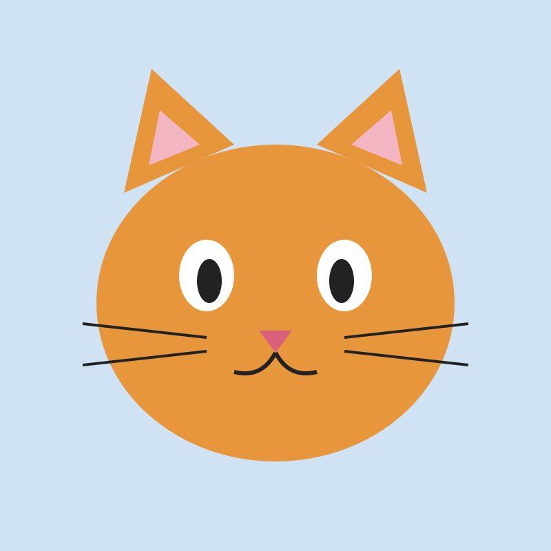

Я родился в Санкт-Петербурге, а учился в школе № 10, затем поступил в университет
на направление «Информатика». Раньше хотел стать космонавтом
веб-разработчиком. Мои хобби — программирование, фотография и велосипед.
Интересный факт: я умею собирать кубик Рубика за 2 минуты.
